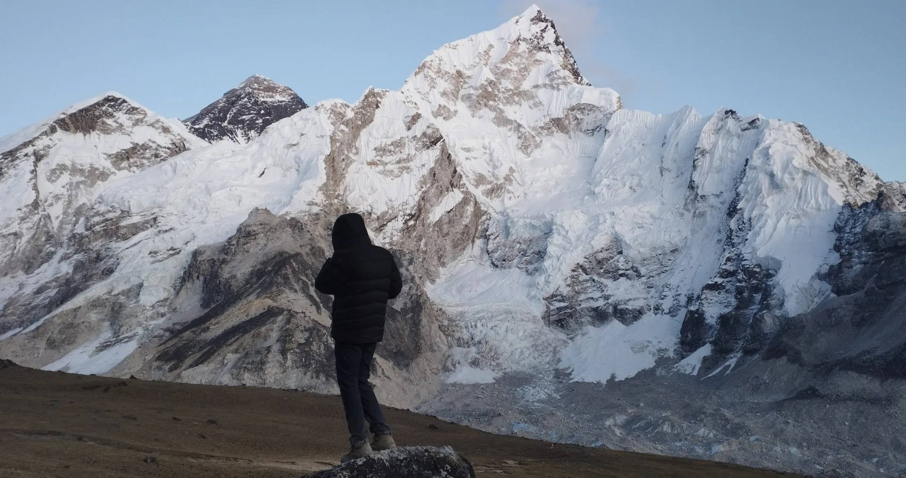
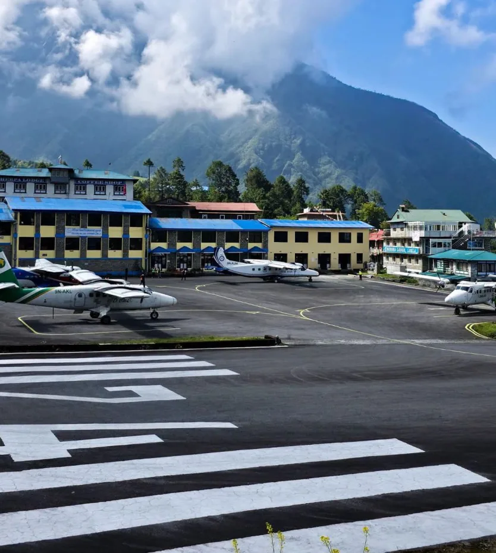
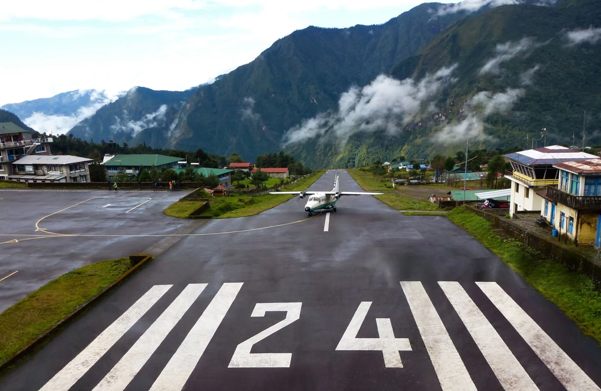
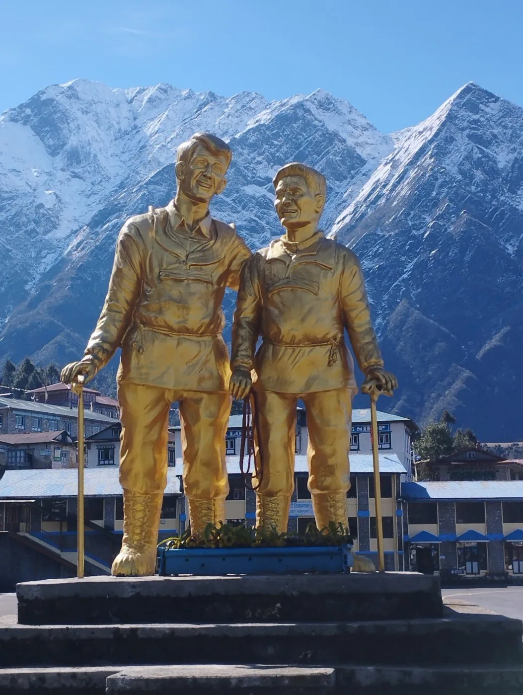
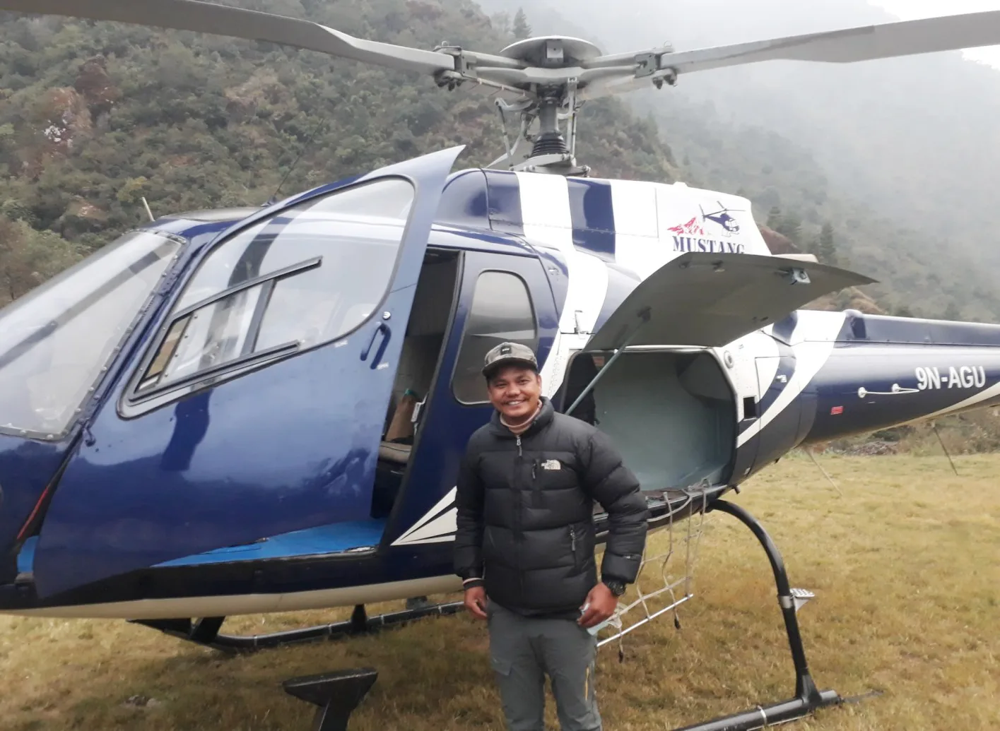
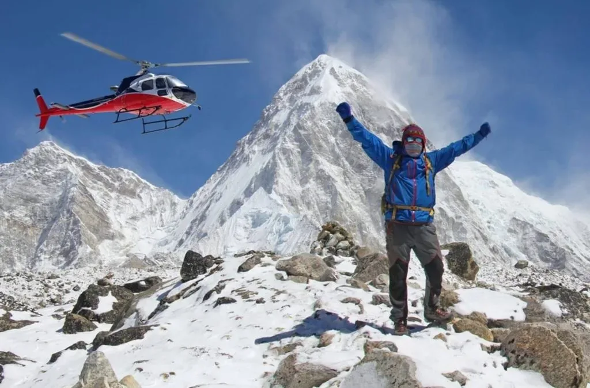

1. The Gateway to Everest: The Anatomy of Tenzing-Hillary Airport (LUA)

Perched on a narrow mountain shelf at an altitude of 2,846 meters (9,337 feet), Tenzing-Hillary Airport (IATA code: LUA, ICAO: VNLK) is widely regarded as one of the most remarkable feats of mountain engineering on Earth.
Originally carved out of rough potato fields in 1964 under the supervision of Sir Edmund Hillary and local Sherpas (who famously stomped the soil flat with their feet to create the initial dirt strip), the runway was finally paved with asphalt in 2001.
The runway measures just 527 meters (1,729 feet) in length and 30 meters in width. For comparison, a standard international airport runway is typically between 3,000 and 4,000 meters long. To enable twin-engine aircraft to land and take off within such an extraordinarily short distance, the runway is engineered with an 11.7% uphill gradient. When an aircraft touches down, the steep incline naturally decelerates the plane before it reaches the solid stone wall at the top. On takeoff, aircraft accelerate downhill off the edge of the cliff directly into the Dudh Koshi river gorge!
2. The 2027 Flight Mandate: Ramechhap (Manthali) vs. Kathmandu (TIA)

The single biggest logistical change for modern Everest trekkers is the Civil Aviation Authority of Nepal (CAAN) Ramechhap flight redirection mandate.
During the peak trekking seasons of Autumn (October through November) and Spring (March through May), Tribhuvan International Airport (TIA) in Kathmandu suffers severe airspace congestion. Large wide-body international jetliners take priority over small domestic turboprops, causing mountain flights to circle in fuel-wasting holding patterns.
To solve this crisis, CAAN mandates that virtually all commercial passenger flights to Lukla must operate from Manthali Airport in Ramechhap.
| Factor | Kathmandu Operations (TIA) | Ramechhap Operations (Manthali) |
|---|---|---|
| Operating Season | Off-peak months (Dec–Feb & Jun–Aug) | Peak seasons (Oct–Nov & Mar–May) |
| Ground Travel from Thamel | 20–30 minutes city taxi | 4.0 to 4.5 hours private road transfer (130 km) |
| Departure Time from Hotel | 5:00 AM – 6:00 AM | 1:00 AM – 2:00 AM (or overnight in Mulkot/Manthali) |
| Flight Duration to Lukla | 30 – 35 minutes | 12 – 15 minutes |
| Weather Reliability | Moderate; frequently delayed by TIA air traffic | High; short 12-minute corridor minimizes en-route weather delays |
| Daily Flight Capacity | Limited (15–20 flights/day) | Very High (50–70 flights/day shuttle service) |
The Mulkot Resort Solution
Rather than enduring a brutal 1:00 AM road drive from Kathmandu to Ramechhap over winding mountain roads, Igloo Himalaya Treks offers clients the option to travel to the riverside town of Mulkot along the BP Highway the afternoon prior. You sleep comfortably in a deluxe riverside hotel and take a relaxed 45-minute drive to Manthali Airport at 6:00 AM for the first flight wave!
3. Master Flight Comparison: Airlines, Corridors & Schedules
Three primary scheduled domestic airlines operate fixed-wing passenger services into Lukla: Tara Air (Yeti Airlines affiliate), Summit Air, and Sita Air.
| Airline | Primary Aircraft Flown | Passenger Capacity | Daily Peak Departures | Key Operational Notes |
|---|---|---|---|---|
| Tara Air | DHC-6 Twin Otter (Series 300/400) | 16 Passengers | 15 – 25 daily flights | Largest fleet on the Lukla corridor; Yeti Airlines safety backing |
| Summit Air | LET L-410 Turbolet | 18 Passengers | 15 – 20 daily flights | Modern Czech twin-turboprops; spacious cabin windows |
| Sita Air | Dornier 228 | 16 Passengers | 10 – 15 daily flights | German-designed rugged high-wing STOL aircraft; excellent cargo capacity |
Flight Timing Windows: Flights operate exclusively between 6:15 AM and 11:30 AM. After midday, solar heating in the deep Dudh Koshi river valley creates intense convective thermal updrafts, crosswinds, and thick afternoon cloud build-up, forcing airport closure until the following dawn.
4. Aircraft Anatomy: Twin Otter, Dornier 228 & L-410 Turbolet

Standard passenger jets like Boeing 737s or Airbus A320s cannot physically land in Lukla. The airport relies exclusively on specialized STOL (Short Take-Off and Landing) twin-engine turboprops engineered specifically for unpaved, high-altitude alpine outposts:
- DHC-6 Twin Otter: Built by de Havilland Canada, this legendary aircraft features a fixed tricycle landing gear, twin Pratt & Whitney PT6A turboprop engines, and high-lift trailing-edge flaps. It can land on a dime and take off in fewer than 300 meters.
- Reverse-Pitch Propellers: Upon touching down on Lukla's asphalt, pilots instantly throw the propellers into reverse pitch. The propeller blades swivel to blast air forward, functioning as a colossal aerodynamic brake that pulls the aircraft to a halt within seconds.
- Unpressurized Cabins: STOL mountain planes fly unpressurized at cruising altitudes between 3,000m and 3,600m. You will feel the cool mountain air inside the cabin, and you will notice your ears popping as you descend toward Lukla.
5. Aviation Safety, Pilot Certification & CAAN Mountain Flying Protocols
Because of sensationalist media headlines dubbing Lukla "The Most Dangerous Airport in the World," travelers frequently experience intense anxiety before boarding their flight.
While the airstrip demands absolute respect, modern regulatory oversight by CAAN and international aviation bodies has instituted extraordinarily stringent safety protocols:
Strict VFR Standards
- Zero Cloud Tolerance: Lukla operates strictly under Visual Flight Rules (VFR). If there is cloud cover over the Lukla runway, the Lamjura Pass, or the valley approach, flights are grounded immediately.
- No Instrument Blind Landings: There is no radar or instrument landing system (ILS) in Lukla. Pilots must maintain continuous visual contact with the runway at all times.
Rigorous Pilot Certification
- Veteran Captains Only: To be certified as Pilot-in-Command (Captain) into Lukla, a pilot must possess at least 1,000 flight hours, have completed at least 100 STOL flights in Nepal, and have executed 10 successful landings into Lukla under certified instructor supervision.
- Mandatory Weather Aborts: If pilots encounter unexpected cloud banks during the 12-minute transit, they execute an immediate 180-degree turn back to Ramechhap.
6. The Strict 15kg Luggage Rule & Baggage Weigh-In Process

In high-altitude aviation, weight equals safety. Thin mountain air reduces aircraft wing lift and engine thrust. To ensure that twin-engine planes can climb rapidly out of river valleys in the event of an engine failure, CAAN strictly limits total payload weight.
Every passenger is allowed a total luggage allocation of exactly 15 kilograms (33 lbs):
- 10 kg (22 lbs) Checked Duffel: Your main expedition duffel bag, which goes into the aircraft's nose or aft cargo hold.
- 5 kg (11 lbs) Carry-On Daypack: The backpack you carry with you into the cabin.
The Weigh-In Ritual
At both Kathmandu and Ramechhap airports, airline check-in agents will place both your duffel bag AND your daypack on the scale together. You cannot cheat the 15kg limit by stuffing heavy gear into your daypack! If your combined bags weigh 18kg, you will be required to pay excess baggage fees (~NPR 200 / ~$1.50 per kg) or remove items.
The Pro-Trekker Weight Hack: On the morning of your flight, wear your heaviest gear onto the aircraft! Wear your heavy trekking boots, your heavyweight 800-fill down jacket, and carry your camera around your neck. None of the items worn on your body are weighed on the baggage scale!
7. Best Seating Strategy: Left Side vs. Right Side for Mountain Views
Seating on STOL passenger aircraft into Lukla is typically free seating (unassigned). Securing the correct side of the cabin makes the difference between staring at an empty valley wall and enjoying an awe-inspiring, front-row seat to the snow-capped Himalayan giants:
Outbound: To Lukla
SIT ON THE LEFT SIDE OF THE PLANE (Row A)
- As the aircraft tracks east-northeast from Kathmandu or Ramechhap, the entire High Himalayan chain—Langtang, Gauri Sankar, Cho Oyu, and Everest—stretches across your left-hand window.
- You will see glaciers, icy ridges, and prayer flags fluttering on mountain crests.
Inbound: Return from Lukla
SIT ON THE RIGHT SIDE OF THE PLANE (Row C)
- When departing Lukla heading west-southwest back toward Kathmandu or Ramechhap, the mountain views are now on the starboard side.
- Sitting on the right gives you an unforgettable farewell view of the high peaks melting into rolling green mid-hill valleys.
8. Weather Delays, Monsoon Clashing & The Dreaded 'Lukla Fog'

Himalayan weather does not follow airline timetables. Even in prime trekking months (October or April), sudden unseasonal low-pressure systems, late monsoon moisture, or winter westerly jet streams can envelop Lukla in thick, impenetrable cloud banks for 24 to 72 hours.
When Lukla clouds over, no commercial fixed-wing plane will take off. This is not incompetence—it is the very reason why Nepal's mountain aviation safety record has improved so dramatically over the past two decades.
The Golden Rule of International Flights: Never, under any circumstances, schedule your international flight home on the same day or the day immediately following your scheduled Lukla flight. You must always build in at least two full contingency buffer days in Kathmandu at the end of your itinerary. If your flight out of Lukla is delayed by 24 hours, a buffer ensures you will not miss your $1,500 flight home.
9. Helicopter Alternatives: Shared Seats, Private Charters & Weather Bypasses

When fixed-wing Twin Otters are grounded by marginal visibility, helicopters frequently save the day.
Modern turbine helicopters operating in Nepal (principally the Airbus H125 / Eurocopter AS350 B3e) can fly in lower cloud ceilings and navigate under cloud decks that fixed-wing turboprops cannot legally penetrate. Furthermore, helicopters do not require Lukla's runway; they can land at small flat terraced fields in Surke (2,290m) or Paiya just below Lukla, allowing trekkers to hike up to Lukla in 2 hours.
Shared Helicopter Flight
- Cost: Approximately $400 to $600 USD per person (one-way) when sharing with 5 passengers.
- Airlines will typically credit your unused plane ticket (~$180–$217) toward the helicopter seat cost.
- Arranged on short notice by our operations desk when plane delays exceed 4 hours.
Private Charter Helicopter
- Cost: Approximately $2,200 to $2,800 USD per flight (accommodates up to 5 passengers, subject to high-altitude weight limits).
- Flies directly from Kathmandu (TIA Domestic Heli-pad) to Lukla, Namche Bazaar, or even Gorak Shep.
10. Overland Route Alternatives: Trekking to Everest Without Flying
If you have severe aerophobia or want to avoid flights altogether, you can reach the Everest region via overland transport:
- The Jeep Road to Tham Danda / Paiya: Over the past five years, newly blasted mountain tracks have pushed deep into the Solukhumbu. You can hire a rugged 4WD Scorpio jeep from Kathmandu to Tham Danda (or Paiya) via Phaplu and Salleri. The drive takes 12 to 14 grueling hours over rough, bumpy dirt tracks, followed by a 4-to-5-hour uphill trek to Lukla or Phakding.
- The Classic 1953 Hillary Route via Jiri: The historical pioneers (including Sir Edmund Hillary and Tenzing Norgay in 1953) walked all the way from the Kathmandu valley. You can drive 7 hours to Jiri or Shivalaya and trek for 5 to 6 glorious, quiet days through lush mid-hill Rai and Sherpa villages before reaching Lukla. It adds a week to your trip but provides the greatest physical conditioning on Earth.
11. The Lukla Check-In & Departure Day Experience (Step-by-Step)
Departing Lukla at the end of your trek is an exhilarating, slightly chaotic spectacle that you will remember forever:
- 6:00 AM Gate Arrival: You arrive at the tiny passenger terminal building after breakfast at your Lukla lodge. The morning mountain air is sharp and frosty.
- Security & Weigh-In: Your bags are manually inspected by Nepal Police, duffels are placed on the scale, and you receive a laminated reusable boarding pass.
- The Waiting Game: You sit in the heated departure lounge listening to the radio crackle. When the first incoming flight from Ramechhap is heard roaring up the valley, the room buzzes with excitement.
- The 7-Minute Turnaround: The plane touches down, taxis into the apron, passengers disembark, porters unload luggage, your bags are thrown into the cargo hold, and you are ushered across the tarmac within 7 minutes flat.
- The Takeoff: You buckle your seatbelt, the pilots run the twin engines up to full roaring power with the brakes locked, and then release. The aircraft rockets down the steep 11.7% downhill slope, plunges off the edge of the cliff into thin air, and soars effortlessly over the valley floor!
12. Cost Breakdown & Booking Protocols in 2027
| Passenger Category | Kathmandu ↔ Lukla (One-Way) | Ramechhap ↔ Lukla (One-Way) | Round-Trip Estimate |
|---|---|---|---|
| Foreign Nationals (Non-SAARC) | ~$217 USD | ~$185 USD | ~$370 – $434 USD |
| SAARC Nationals (India, etc.) | NPR 15,500 (~$115 USD) | NPR 12,500 (~$95 USD) | ~$190 – $230 USD |
| Nepali Citizens | NPR 6,500 (~$50 USD) | NPR 5,500 (~$42 USD) | ~$84 – $100 USD |
All-Inclusive Trekking Packages: When you book your expedition through Igloo Himalaya Treks, all domestic fixed-wing flights (including private Ramechhap road transfers or Kathmandu flights), airport taxes, porter baggage handling, and flight reconfirmation are fully covered in your package price with priority morning boarding passes.
13. Top 7 Sherpa Pro-Tips for a Flawless Lukla Flight Experience
Here are the non-negotiables for an effortless, stress-free flight day:
- 1. Aim for Flight Waves 1 and 2: Airlines number their flights in waves. Flights in waves 1 and 2 (departing 6:30 AM to 7:45 AM) have a 95% on-time departure rate. Later waves (after 9:30 AM) are exponentially more vulnerable to thermal winds and cloud cancellation.
- 2. Keep Essentials in Your Daypack: If your checked duffel is inadvertently delayed onto a subsequent aircraft due to weight limits, ensure your daypack holds your passport, permits, cash, essential medications, and your fleece jacket.
- 3. Pack Lithium Batteries in Cabin Baggage: Power banks, camera batteries, and spare lithium cells are strictly banned from checked cargo duffels under aviation safety laws. They must be carried inside your daypack.
- 4. Dress in Layers for the Flight: Aircraft cabins are not heated during ground operations. Dress warmly in your fleece or light down layer.
- 5. Stay Flexible & Calm: Weather in the Himalayas is completely outside human control. Shouting at airline staff will not make the clouds part. Approach flight days with patience and zen acceptance.
- 6. Prepare for Bumpy Landings: Mountain air currents cause minor turbulence on the final 3-minute descent into the Lukla bowl. This is completely standard mountain flying.
- 7. Let Your Agency Handle Reschedules: During major weather delays, individual travelers face chaotic lines at airline ticketing counters. Guided clients with Igloo Himalaya Treks relax while our Kathmandu dispatch team handles all re-ticketing and helicopter transfers automatically.
14. Frequently Asked Questions: Lukla Flights & Travel Logistics
Why do flights to Lukla depart from Ramechhap instead of Kathmandu?
During the busy trekking seasons of Autumn (October–November) and Spring (March–May), the Civil Aviation Authority of Nepal (CAAN) redirects Lukla passenger flights to Manthali Airport in Ramechhap. This avoids catastrophic air traffic congestion at Kathmandu's international airport and drastically reduces weather delays, because the flight from Ramechhap to Lukla takes only 12 to 15 minutes compared to 35 minutes from Kathmandu.
What is the exact luggage weight limit for the Lukla flight?
The strict domestic airline luggage limit is 15 kilograms (33 lbs) per passenger. This is normally divided into 10 kg for your checked duffel bag and 5 kg for your carry-on daypack. Both bags are weighed together at the check-in scale. Excess baggage fees apply (approx. $1.50 to $2.00 per kg) if cargo limits permit.
How dangerous is the flight into Lukla Airport?
While Lukla's short uphill runway and mountain terrain require immense skill, modern regulatory standards have made it remarkably safe. Flights operate exclusively under strict Visual Flight Rules (zero cloud tolerance), and pilots must have extensive STOL flight experience and specialized mountain certification before being allowed to captain a flight into Lukla.
Which side of the plane should I sit on for the best mountain views?
When flying from Kathmandu/Ramechhap to Lukla, sit on the LEFT side of the plane for panoramic views of the Himalayan range. On the return flight from Lukla back to Kathmandu/Ramechhap, sit on the RIGHT side.
What happens if my Lukla flight is cancelled due to weather?
If your flight is cancelled, your ticket is rolled over to the next morning's flight wave. If weather delays persist for multiple days, trekkers can opt for a shared helicopter transfer ($400 to $600 per seat), which can fly under lower cloud ceilings, or travel overland via 4WD jeep from Tham Danda / Phaplu.
How many buffer days should I build into my international travel schedule?
You should always schedule at least two full contingency buffer days in Kathmandu at the end of your trek before your international flight home. This gives you a safe margin in case flights out of Lukla are delayed by mountain fog or adverse weather.
Can I take a helicopter instead of a plane to Lukla?
Yes. Helicopters operate regularly between Kathmandu and Lukla (and directly up to Namche Bazaar). Shared helicopter seats typically cost between $400 and $600 USD per person, while private charters cost around $2,200 to $2,800 USD per flight (up to 5 passengers).
How long does the flight to Lukla take?
A flight directly from Kathmandu (TIA) to Lukla takes approximately 30 to 35 minutes. A flight from Manthali Airport in Ramechhap takes only 12 to 15 minutes.

Ready to Experience the Himalayas?
Whether you are preparing for high-altitude trekking, cultural circuits, or alpine summit expeditions, start planning a bespoke journey tailored to your fitness, travel season, and style.